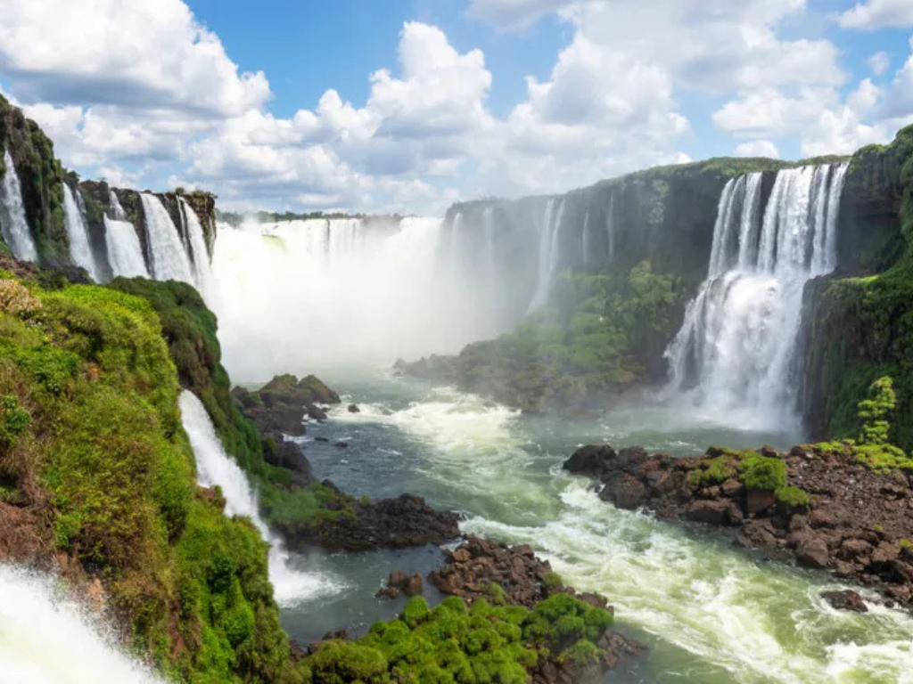

O Paraná, localizado na Região Sul do Brasil, é um estado que se destaca pelo equilíbrio entre a força do agronegócio e a preservação de belezas naturais icônicas. Com uma economia dinâmica, é um dos maiores produtores de grãos do país, impulsionado pelo solo fértil de "terra roxa" e por um parque industrial diversificado. Sua capital, **Curitiba**, é internacionalmente reconhecida pelo planejamento urbano e soluções de mobilidade, enquanto o interior abriga as monumentais **Cataratas do Iguaçu**, uma das Sete Maravilhas da Natureza. Culturalmente, o estado é um mosaico formado por influências de imigrantes europeus — especialmente poloneses, ucranianos, alemães e italianos — e asiáticos, que deixaram um legado visível na arquitetura, na gastronomia e nas tradições que compõem a identidade paranaense.
